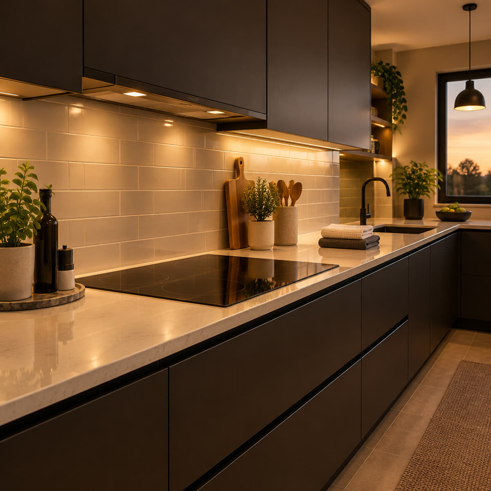
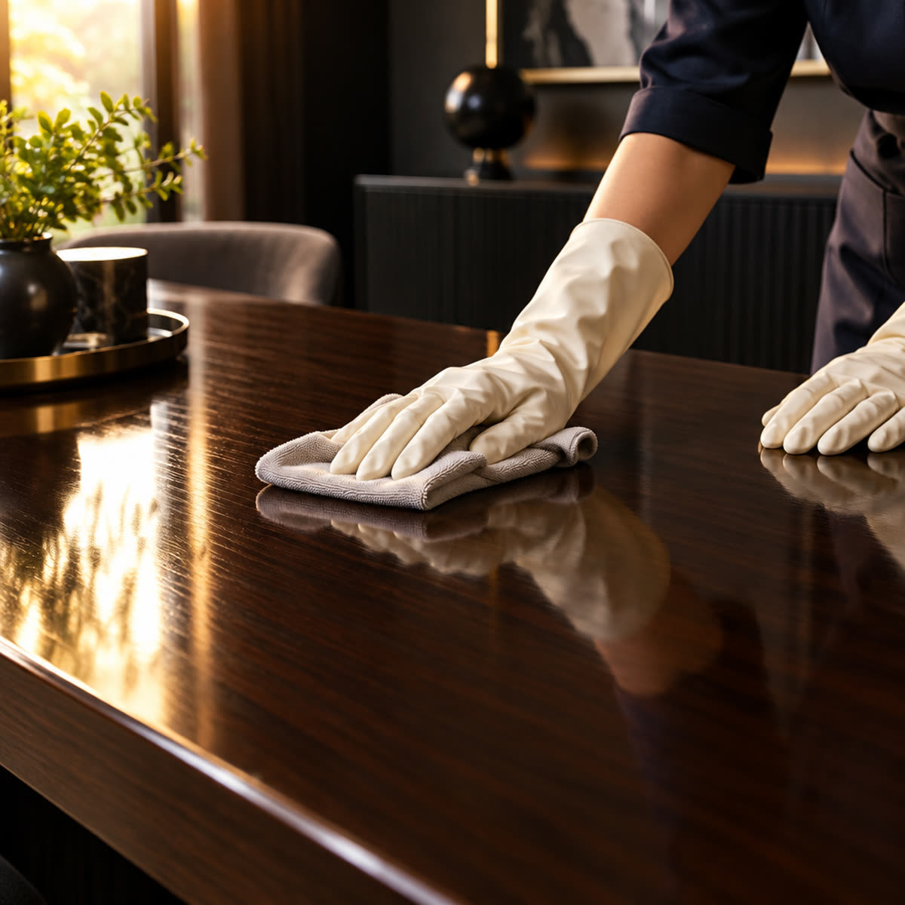

Уборка
Три формата и зоны отдельно
Выберите формат целиком или добавьте нужные зоны к поддерживающей.
01 · поддерживающая
Держит дом в порядке между генеральными
То, что видно каждый день: пыль, полы, санузел, кухня снаружи. Оптимально раз в неделю или раз в две недели.
- Пыль с открытых поверхностей и полок
- Полы: пылесос и мытьё
- Санузел: сантехника, плитка, зеркала
- Кухня: столешница, раковина, плита снаружи, фасады
- Вынос мусора, заправка постели по желанию


02 · генеральная
Разбирает то, что копилось месяцами
Плюс к поддерживающей: плинтусы, двери, радиаторы, светильники, швы плитки, фасады шкафов. Занимает примерно в 1,8 раза дольше.
- Плинтусы, двери, дверные ручки и наличники
- Радиаторы, подоконники, светильники
- Плитка и швы, фасады шкафов и техники
- Пыль под мебелью, где достаёт инвентарь
- Окна — по отдельной договорённости
03 · после ремонта
Убирает строительную пыль, а не «пыль после ремонта»
Строительная пыль мелкая и лезет отовсюду: с потолка, из щелей, из вентиляции. Поэтому уборка идёт в несколько проходов, сверху вниз.
- Потолки и стены, включая углы
- Следы краски, клея и монтажной пены с поверхностей
- Плёнка, скотч, защитные покрытия
- Подоконники, откосы, вентиляционные решётки
- Полы в 2–3 прохода, пока вода не станет чистой
Зоны отдельно
Если нужно добавить к любому формату
Каждая зона добавляет время к общему расчёту — говорим об этом заранее.
Окна и балкон
Стёкла, рамы, подоконники, откосы. Балкон и лоджия — отдельно от комнат.
Внутри шкафов
Полки, ящики, разбор и протирка. Хорошо в паре с генеральной.
Кухня глубже
Холодильник внутри, духовка, вытяжка, фасады и фартук.